第 1 章 引言#
本章解决：热力学只告诉你过程始末交换了多少能量，不回答"以多快的速率交换"——传热学补上这一半：只要介质内部或介质之间存在温度差，就必然发生传热，而传热有三种模式（导热、对流、辐射），每种模式有一条把热流量与温度差联系起来的速率方程。能量守恒（热力学第一定律）是贯穿全书的分析主线：选控制体、列能量平衡、代入速率方程，就能求出温度与热流量；热力学第二定律则给出热机效率的天花板，并说明真实换热如何把它压低。本章把全套"词汇表"、速率方程和解题方法论一次立起来，后面每一章都在这个框架里展开。
1.0 本章导图#
1.1 什么是传热、怎样传热#
热力学课处理的是系统与外界之间的能量交换：交换的两种形式叫功和热。但热力学只关心过程端态（end states）——始末状态之间交换了多少，不回答两件事：这种交换的物理机制是什么？它以怎样的时间速率发生？传热学的目标就是把热力学分析向前推一步：研究传热模式，建立计算传热速率的关系式。
第一个问题"什么是传热"用一句话就能答死：
只要介质内部或介质之间存在温度差，传热就必然发生。（Whenever a temperature difference exists in a medium or between media, heat transfer must occur.）
更完整的定义：
热量（heat）是因空间温度差而迁移的热能（Heat transfer (or heat) is thermal energy in transit due to a spatial temperature difference）。
第二个问题"怎样传"——传热按模式（mode）分三类，见图 1.1：
- 导热（conduction）：静止介质（固体或流体）内部存在温度梯度时，穿越介质的传热；
- 对流（convection）：表面与运动流体温度不同时，表面与流体之间的传热；
- 热辐射（thermal radiation）：一切有限温度的表面都以电磁波形式发射能量；在没有中间介质的真空中，两个不同温度的表面之间照样有净辐射换热。
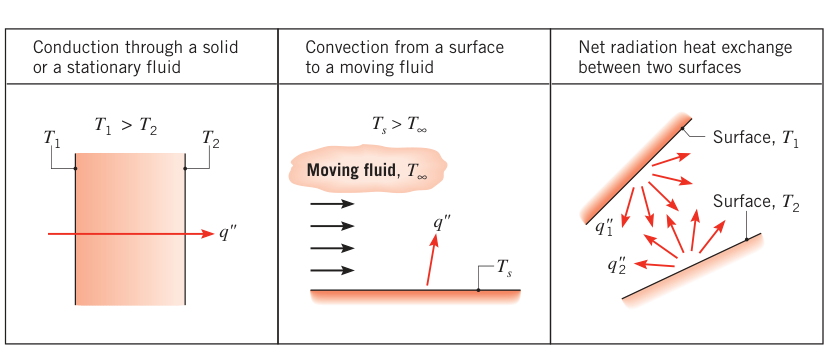
1.2 物理起源与速率方程#
作为工程师，要抓两件事：每种模式背后的物理机制，以及量化"单位时间转移多少能量"的速率方程（rate equation）。
1.2.1 导热#
一提到导热，脑子里应该立刻出现原子与分子的活动——正是这些微观过程支撑着导热。导热可以看成：由于粒子之间的相互作用，能量从物质中能量较高的粒子传给能量较低的粒子。
用气体讲最清楚（图 1.2）：设气体中存在温度梯度，且没有宏观整体运动。任一点的温度对应于该点附近气体分子的能量——包括随机平动，也包括分子内部的转动与振动能。温度越高，分子能量越高。邻近分子在不断碰撞，碰撞时能量必然从高能分子流向低能分子。只要存在温度梯度，导热就必然沿温度降低的方向进行——即使没有碰撞，图 1.2 中假想平面 \(x_0\) 也在被上、下两边的分子随机穿越：上方分子温度高、下方分子温度低，正 \(x\) 方向必有净能量输运，碰撞只会强化这种输运。这种靠分子随机运动实现的净能量输运，叫能量扩散（diffusion）。
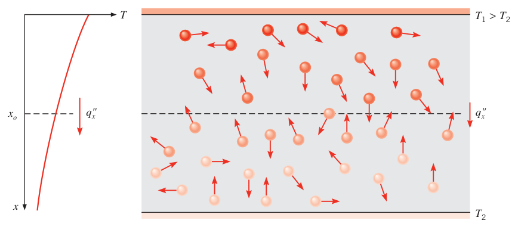
液体的情况类似，只是分子排列更紧、相互作用更强更频繁。固体里，导热归因于原子活动，形式是晶格振动（lattice vibrations）——现代观点把它归结为原子运动诱发的晶格波：电绝缘体中能量完全靠晶格波传递；导体中还有自由电子的平动参与。导热相关的物性在第 2 章和附录 A 展开。
导热的例子随处可见：金属勺插入热咖啡，露在外面的勺柄慢慢变热；冬天供暖房间通过墙壁向室外散热，主要就是墙内的导热。
速率方程：傅里叶定律。对图 1.3 的一维平壁，温度分布为 \(T(x)\)，导热的速率方程叫傅里叶定律（Fourier's law）：
逐项拆开：
- \(q_x''\)：热流密度（heat flux），单位 W/m²。它是垂直于传热方向的单位面积上、沿 \(x\) 方向的传热速率；
- \(dT/dx\)：\(x\) 方向的温度梯度（temperature gradient）；
- \(k\)：导热系数（thermal conductivity），单位 W/(m·K)，是输运物性，由壁面材料决定；
- 负号的来源：热量沿温度降低的方向传递。温度梯度为负（\(T\) 随 \(x\) 增大而减小），热流密度为正。
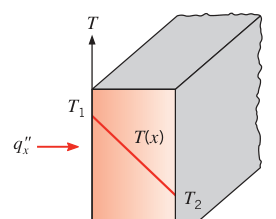
图 1.3 是稳态（steady-state）条件：温度分布为线性，梯度可写成
于是热流密度为常数：
注意式 (1.2) 给的是热流密度——单位面积的传热速率。整个壁面积 \(A\) 上的热流量（heat rate）\(q_x\)（单位 W）等于热流密度乘面积：
热流密度（W/m²）和热流量（W）是两个量，单位差一个 m²，别混。
拓展：导热系数的量级感
\(k\) 跨好几个数量级：纯金属约 10–400 W/(m·K)（铜约 400），合金几十，液体约 0.1–1，气体约 0.01–0.2（空气 300 K 时约 0.026），多孔隔热材料可以低到 0.01–0.1。选材时"导热好"与"隔热好"就是在这根数轴两端做选择。具体数值查附录 A。
【例 1.1】工业炉墙的散热
已知（Known）：工业炉的炉墙由厚 0.15 m 的耐火黏土砖（fireclay brick）砌成，导热系数 1.7 W/(m·K)。稳态运行时测得内、外表面温度分别为 1400 K 和 1150 K。
求（Find）：0.5 m × 1.2 m 墙面的散热速率。
示意图（Schematic）：
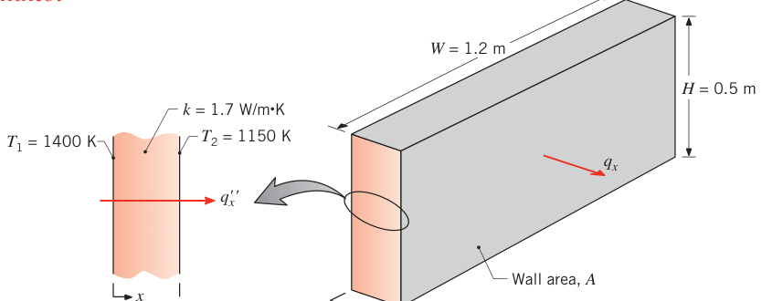
假设（Assumptions）：1. 稳态条件；2. 通过炉墙为一维导热；3. 导热系数为常数。
分析（Analysis）：传热方式是导热，热流密度由傅里叶定律给出。用式 (1.2)：
热流密度代表通过单位面积截面的传热速率，它在整个墙面上均匀（不变）。墙面积 \(A = H \times W\)，热损失为
点评（Comments）：注意热流方向（从高温内表面指向低温外表面），以及热流密度与热流量的区别。
1.2.2 对流#
对流模式包含两种机制的叠加：除了随机分子运动造成的能量扩散，还有流体宏观整体运动携带的能量。任一瞬间都有大量分子成团地集体运动，存在温度梯度时，这种整体运动对传热有贡献。由于成团的分子仍保留随机运动，总传热 = 随机分子运动输运 + 流体整体运动输运的叠加。习惯上把这种复合输运叫对流（convection），而把"靠流体整体运动输运"单独称为平流（advection）。
我们最关心的是运动流体与其接触表面之间、二者温度不同时发生的对流换热。看图 1.4：流体流过加热表面，流体–表面相互作用的结果，是流体中形成一个速度从壁面处为零过渡到来流速度 \(u_\infty\) 的区域——流动边界层（hydrodynamic, or velocity, boundary layer，也叫速度边界层）。若表面与来流温度不同，还有一个温度从壁面处 \(T_s\) 过渡到外流 \(T_\infty\) 的区域——热边界层（thermal boundary layer），它可能比速度边界层小、大或相当。只要 \(T_s \neq T_\infty\)，表面就会向外流对流换热。
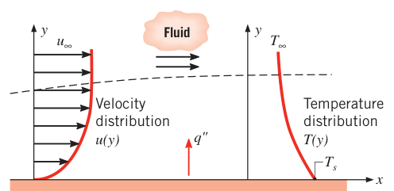
对流换热靠边界层内的随机分子运动和流体整体运动共同维持：靠近壁面处流体速度低，随机分子运动（扩散）的贡献占主导——事实上在表面与流体的界面（\(y=0\)）处流体速度为零，传热完全靠这一机制。整体运动的贡献来自边界层沿 \(x\) 方向不断增长：导入边界层的热量被下游带走，最终交给边界层外的流体。理解对流离不开边界层，所以流体力学在后面的对流分析中会反复出场。
按流动的起因分类（图 1.5）：
- 强制对流（forced convection）：流动由外部手段驱动——风扇、泵、大气风等。例：用风扇给印制电路板上的发热元件吹风冷却（图 1.5a）。
- 自然对流（free convection，或 natural convection）：流动由浮升力（buoyancy forces）诱发，浮升力来自流体中温度差异造成的密度差异。例：竖直排列的电路板，接触元件的空气升温、密度变小，比周围空气轻而上浮，较冷的环境空气从下方补入（图 1.5b）。
- 混合对流（mixed convection）：强制与自然并存。若图 1.5a 中流速小、浮升力大，会诱发出与强制流相当的二次流，方向垂直于强制流，对换热影响显著；图 1.5b 中若用风扇强迫空气向上（顺浮升力）或向下（逆浮升力）流过板间，也构成混合对流。
传的能量通常是流体的显热（sensible，即内热能）；但对某些对流过程，还有潜热（latent）交换参与，一般与液–汽两相间的相变相伴。本书关注两个特例：沸腾（boiling，锅底产生的汽泡诱发液体运动，图 1.5c）与凝结（condensation，水蒸气在冷水管外表面凝结，图 1.5d）。
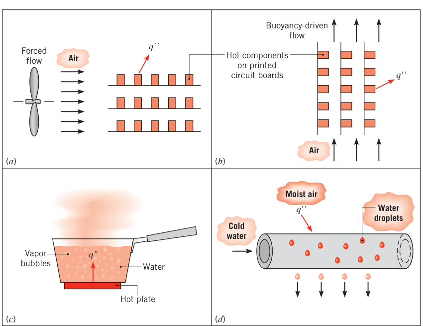
不论哪种对流过程，速率方程都写成牛顿冷却公式（Newton's law of cooling）：
- \(q''\)：对流热流密度（convective heat flux），W/m²，正比于表面温度 \(T_s\) 与流体温度 \(T_\infty\) 之差；
- \(h\)：对流换热系数（convection heat transfer coefficient），单位 W/(m²·K)。国内教材（杨世铭、陶文铨《传热学》）也称表面传热系数。
\(h\) 取决于边界层内的状况，受表面几何、流动性质以及一堆流体热力学与输运物性影响。对流研究的最终目标就是确定 \(h\)（第 6 章）；在那之前，对流经常作为导热问题（第 2–5 章）的边界条件出现——那时把 \(h\) 当已知量，取表 1.1 的典型值。
方向约定：用式 (1.3a) 时，规定热从表面流出（\(T_s > T_\infty\)）为正、流入表面为负。当然也可以反过来写
此时热流入表面为正。两种写法都行，关键是说清楚正方向。
表 1.1 对流换热系数的典型值
| 过程 | 流体 | \(h\) [W/(m²·K)] |
|---|---|---|
| 自然对流（free convection） | 气体 | 2–25 |
| 自然对流 | 液体 | 50–1000 |
| 强制对流（forced convection） | 气体 | 25–250 |
| 强制对流 | 液体 | 100–20 000 |
| 相变对流：沸腾或凝结（boiling / condensation） | 液–汽 | 2500–100 000 |
拓展：h 为什么不是物性
\(k\) 是材料属性，\(h\) 不是任何材料的属性——它是"边界层内导热 + 整体运动输运"这个复合过程的表现强度，随流动起因（强制/自然）、几何（平板/圆管/翼型）、流速、流体物性（\(\rho, c_p, \mu, k\)……）而变，同一工况下还可能随位置变化（例 1.3 点评 3：桨叶扫过机舱时 \(h\) 周期性波动，取的是时间平均值）。第 6 章会用无量纲数（努塞尔数、雷诺数、普朗特数）系统地算 \(h\)。
1.2.3 热辐射#
热辐射（thermal radiation）是一切非零温度物质发射的能量。虽然本书聚焦固体表面的辐射，液体、气体同样发射。不管物质形态如何，发射都归因于组成原子/分子的电子构型变化；辐射场的能量靠电磁波（或说光子）输运。导热和对流都需要物质介质，辐射不需要——事实上辐射在真空中传递得最有效。
看图 1.6a：表面发射的辐射来自表面所包物质的热能，单位面积单位时间的发射速率叫表面发射功率（surface emissive power）\(E\)（W/m²）。发射功率有上限，由斯特藩–玻尔兹曼定律（Stefan–Boltzmann law）给出：
- \(T_s\)：表面的绝对温度（absolute temperature），必须用开尔文（K）；
- \(\sigma\)：斯特藩–玻尔兹曼常数（Stefan–Boltzmann constant），\(\sigma = 5.67 \times 10^{-8}\ \mathrm{W/(m^2 \cdot K^4)}\)。
达到上限的理想辐射体叫黑体（blackbody）。真实表面的发射热流密度低于同温度黑体，写成
其中 \(\varepsilon\) 是表面的辐射物性——发射率（emissivity），\(0 \le \varepsilon \le 1\)，衡量表面相对黑体的发射效率，强烈依赖材料与表面处理（查附录 A）。
辐射也会从外界入射到表面上——可能来自太阳这类特殊源，也可能来自周围其他表面。不管来源，把单位面积上入射辐射的速率记为投入辐射（irradiation）\(G\)（图 1.6a）。
投入辐射的一部分（或全部）被表面吸收，使物质热能增加。单位面积吸收辐射的速率用表面辐射物性吸收比（absorptivity，旧译"吸收率"）\(\alpha\) 计算：
\(0 \le \alpha \le 1\)。若 \(\alpha < 1\) 且表面不透明（opaque），其余投入辐射被反射；若表面半透明（semitransparent），还有一部分透射。注意：吸收使物质热能增加、发射使其减少，而反射和透射对物质热能没有影响。\(\alpha\) 的值既取决于表面本身，也取决于入射辐射的性质——同一表面对太阳辐射的吸收比可能不同于对炉墙辐射的吸收比。
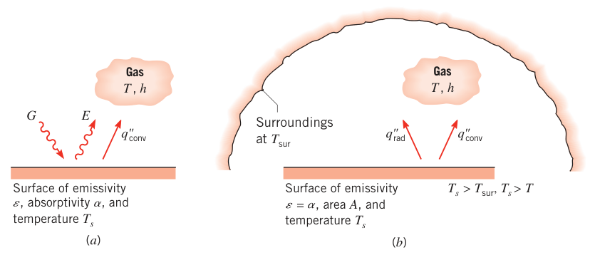
工程中（太阳辐射或其他极高温源是显著例外）通常认为：液体对热辐射不透明，气体对热辐射透明；固体可以不透明（金属），也可以半透明（某些聚合物薄膜、半导体材料）。
一个经常出现的特殊情形：小表面 \(T_s\) 被一个远大的等温表面完全包围（图 1.6b），比如房间或炉子的墙壁 \(T_{sur}\) 包着里面的一个表面（\(T_{sur} \neq T_s\)）。第 12 章会证明：此时投入辐射可近似为 \(T_{sur}\) 下黑体的发射，即 \(G = \sigma T_{sur}^4\)。若再设表面为灰体（gray surface，\(\alpha = \varepsilon\)），则该表面单位面积的净辐射换热为
这是"发射释放的热能"与"吸收获得的热能"之差。
很多场合把净辐射换热写成类似对流的形式：
由式 (1.7)，辐射换热系数（radiation heat transfer coefficient）\(h_r\) 为
这一步把辐射速率方程线性化了：热流量正比于温度差，而不是四次方差。但注意，\(h_r\) 强烈依赖温度，而对流换热系数 \(h\) 的温度依赖一般较弱。
图 1.6 的表面还可能同时对邻近气体对流换热。对图 1.6b 的情形，表面总换热速率为
拓展：黑体、灰体与基尔霍夫定律
黑体有两个含义：吸收一切入射辐射，且在给定温度下发射功率最大（式 1.4 取等号）。真实表面的 \(\varepsilon\) 与 \(\alpha\) 都随波长、方向变化；灰体（gray surface）是"物性与波长无关"的理想化模型，此时热力学平衡下的基尔霍夫定律给出 \(\alpha = \varepsilon\)，于是式 (1.7) 才能写成两个四次方项相减的形式。第 12 章展开。
【例 1.2】裸蒸汽管道的热损失
已知（Known）：一段无保温的蒸汽管穿过房间，空气与墙壁均为 25°C。管外径 70 mm，表面温度 200°C，发射率 0.8。管表面与空气间自然对流的换热系数为 15 W/(m²·K)。
求（Find）：1. 表面发射功率与投入辐射；2. 单位管长的热损失 \(q'\)。
示意图（Schematic）：
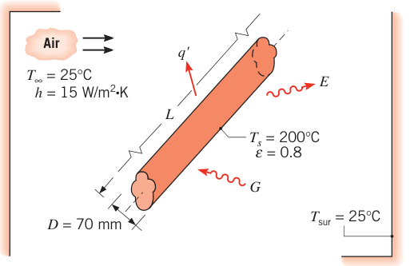
假设（Assumptions）：1. 稳态条件；2. 管与房间之间的辐射换热属于"小表面对大封闭腔"；3. 表面发射率与吸收比相等。
分析（Analysis）：
- 发射功率由式 (1.5) 计算，投入辐射对应 \(G = \sigma T_{sur}^4\)（温度先换算成 K：\(T_s = 473\ \mathrm{K}\)，\(T_{sur} = 298\ \mathrm{K}\)）：
- 管的散热 = 向空气的对流 + 与墙壁的辐射，即式 (1.10)，其中 \(A = \pi D L\)：
单位管长的热损失：
点评（Comments）：
- 对流（或导热）速率公式里的温度差用 °C 或 K 都行；但辐射速率公式里的温度必须用开尔文。
- 管的净辐射速率也可写为 \(q'_{\mathrm{rad}} = \pi D (E - \alpha G)\)（上式第二行）。
- 这里辐射与对流量级相当，因为 \(T_s\) 比 \(T_{sur}\) 大得多，而自然对流的 \(h\) 小。\(T_s\) 更温和、\(h\) 更大（强制对流）的场合，辐射常可忽略。本题条件下由式 (1.9) 算得 \(h_r = 11\ \mathrm{W/(m^2 \cdot K)}\)。
1.2.4 热阻概念#
把式 (1.2)、(1.3a)、(1.8) 放在一起看，三种模式的传热速率都能写成同一个形状：
\(\Delta T\) 是相关温差，\(A\) 是垂直于传热方向的面积，\(R_t\) 叫热阻（thermal resistance），单位 K/W，三种模式各有各的形式。例如把式 (1.2) 乘以面积 \(A\) 改写成 \(q_x = \Delta T / R_{t,c}\)，则导热热阻为
热阻概念第 3 章详细展开，它是解决复杂传热问题的一件利器。
拓展：热阻的电路类比
式 (1.11) 与欧姆定律 \(I = U/R\) 同构：温差对应电压差，热流量对应电流，热阻对应电阻。于是导热杆是"电阻"，复合换热是"电阻串并联"——墙一层层砌就是串联，表面同时对流加辐射就是并联。第 3 章的热阻网络法全靠这个类比。
1.3 与热力学的关系#
传热学与热力学高度互补、互相纠缠，但有根本区别。热交换在热力学第一、第二定律里都是核心角色——它是系统与外界交换能量的主要机制之一。热力学能算出系统从一个状态变到另一个状态需要多少热量，但既不管交换的机制，也不管计算交换速率的方法。传热学恰恰专门回答"多快"——速率方程（式 1.2、1.3、1.7）就是干这个的。传热学原理常常是把热力学概念落地的手段：比如单靠热力学定不了一座待建电站的尺寸，设计阶段必须引入传热学原理。
1.3.1 与热力学第一定律（能量守恒）的关系#
第一定律说到底就是一句话：系统总能量守恒，系统能量的变化只能来自跨边界的能量输运。对闭口系统（closed system，质量固定的区域），能量跨边界只有两条路：通过边界的热传递、对系统做功或系统对外做功。于是有熟悉的形式：
\(\Delta E_{\mathrm{tot}}^{\mathrm{st}}\) 是系统储存总能量的变化，\(Q\) 是净传入系统的热量，\(W\) 是系统对外做的净功（图 1.7a）。
第一定律也适用于控制体（control volume，又称开口系统 open system）：由控制表面（control surface）围成的空间区域，质量可以穿过控制表面进出。进出的质量携带能量，这一过程叫能量平流（energy advection）——它是控制体的第三条能量通道。对控制体和闭口系统，第一定律可以统一陈述为：
时间间隔 \(\Delta t\) 上的第一定律：控制体储存能量的增加量 = 进入控制体的能量 − 离开控制体的能量。
应用时要记住：能量进入/离开控制体有三条路——通过边界的传热、对控制体做功或控制体对外做功、以及能量平流。
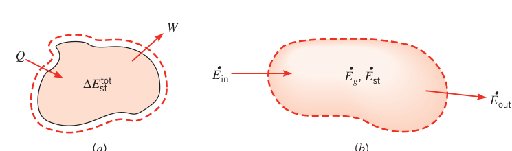
第一定律管的是总能量：动能与势能（合称机械能）加内能。内能再细分：显热分量（对应原子/分子的平动、转动、振动）、潜热分量（与相变相关的分子间作用）、化学分量（化学键）、核分量（核束缚）。传热学聚焦热能与机械能两种形式，而热能+机械能的总量并不守恒——其他形式的能量会转换过来。例如化学反应消耗化学能、使系统热能增加；系统内的电动机把电能变成机械能。这类转换看作热能或机械能的生成（generation，可正可负）。于是，特别适合传热分析的第一定律陈述是：
时间间隔 \(\Delta t\) 上的热能与机械能方程：控制体中储存的热能与机械能的增加量 = 进入控制体的热能与机械能 − 离开控制体的热能与机械能 + 控制体内生成的热能与机械能。
第一定律必须在每一瞬间都成立，所以还可以写成速率形式（各项单位 J/s，即 W）：
瞬时 \(t\) 的热能与机械能方程：控制体中储存的热能与机械能的增加速率 = 进入速率 − 离开速率 + 生成速率。
现在给各项配符号：\(E\) 表示热能与机械能之和（区别于总能量 \(E_{\mathrm{tot}}\)）；下标 st 表示控制体内储存的能量，in/out 表示进入/离开；生成记作 \(E_g\)。两个框述分别写成：
若流入与生成超过流出，控制体内储存的热能与机械能增加；反之减少；若三者平衡，就是稳态（steady-state），储存量不变。图 1.7b 是式 (1.12c) 的示意。
三类能量项怎么认：
- 储存能 \(E_{\mathrm{st}}\)：\(E_{\mathrm{tot}} = KE + PE + U\)，其中动能 \(KE = \tfrac{1}{2}mV^2\)，势能 \(PE = mgz\)。传热问题里动能、势能变化通常小到可忽略。内能 \(U\) 的显热与潜热分量合称热能（thermal energy）\(U_t = U_{\mathrm{sens}} + U_{\mathrm{lat}}\)：显热分量主要伴随温度变化（也可能与压强有关）；潜热分量伴随相变——熔化、汽化使潜热能增加，凝结、凝固使其减少，无相变则该项不动。于是 \(E_{\mathrm{st}} = KE + PE + U_t\)；很多问题里唯一要紧的储存项就是显热能，\(E_{\mathrm{st}} = U_{\mathrm{sens}}\)。
- 生成 \(E_g\)：来自其他形式的内能（化学、电、电磁、核）向热能/机械能的转换，是体积现象（volumetric phenomenon），发生在控制体内部，一般正比于体积大小。例：放热化学反应把化学能换成热能；电流 \(I\) 通过电阻 \(R\)，电能以 \(I^2 R\) 的速率耗散成热能。化学、电、核效应在本书中都按热能/机械能的源（或汇，即负源）处理，归入 \(E_g\)。
- 流入与流出 \(E_{\mathrm{in}}\)、\(E_{\mathrm{out}}\)：是表面现象（surface phenomena），只发生在控制表面，一般正比于表面积。包括传热（导热、对流、辐射）与边界上的功（边界位移、转轴、电磁效应）。质量穿边界时还要加上随质量平流带进/带出的能量：质量流量 \(\dot m\) 进入时携带 \(\dot m(u_t + \tfrac{1}{2}V^2 + gz)\)，其中 \(u_t\) 是单位质量的热能。
稳流能量方程。控制体有流体穿越时，习惯把功分成两块：流动功（flow work）——压力推动流体穿越边界所做的功，单位质量为压强 × 比体积 \(pv\)；其余功记作 \(\dot W\)。稳态（\(dE_{\mathrm{st}}/dt = 0\)）且无生成时，式 (1.12c) 化为稳流能量方程（steady-flow energy equation，图 1.8）：
括号内按进、出口处单位质量流体计。单位质量的热能与流动功之和就是焓（enthalpy）\(i = u_t + pv\)。
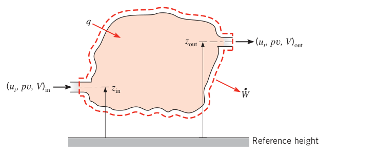
本书大多数开口系统问题中，进、出口间潜热变化可忽略，热能只剩显热分量。若流体按理想气体处理、比热为常数，进、出口焓差为 \((i_{\mathrm{in}} - i_{\mathrm{out}}) = c_p(T_{\mathrm{in}} - T_{\mathrm{out}})\)，\(c_p\) 是比定压热容；若流体是不可压液体，\(c_p = c_v = c\)，显热差为 \(c(T_{\mathrm{in}} - T_{\mathrm{out}})\)，且只要压降不太大，流动功差 \((pv)_{\mathrm{in}} - (pv)_{\mathrm{out}}\) 可忽略。
在已假设稳态、无潜热变化、无生成的前提下，再加四种情形之一的假设，式 (1.12d) 就简化为稳流热能方程：
四种情形：
- 理想气体，动能、势能变化可忽略，除流动功外无其他功；
- 不可压液体，动能、势能变化可忽略，包括流动功在内的功都可忽略（压降不太大时流动功可忽略）；
- 理想气体，黏性耗散可忽略、压强变化可忽略；
- 不可压液体，黏性耗散可忽略。
黏性耗散（viscous dissipation）指流体中黏性力把机械能转换为热能的过程，只在高流速和/或高黏度时才重要。工程应用大多满足上述条件之一，所以式 (1.12e) 是分析运动流体换热的常用武器，第 8 章内部流动对流换热会再用。
质量流量与体积流量：
其中 \(\rho\) 是流体密度，\(V\) 是流速，\(A_c\) 是流道横截面积。
拓展：流动功与焓
\(pv\) 这一项的物理图像：控制体上游的流体像活塞一样把单位质量的新流体"推进"控制体，压力乘比体积就是推入时做的功。它和热能 \(u_t\) 打包成焓 \(i = u_t + pv\)，是因为对开口系统而言这两笔能量总是结伴跨边界——这就是热力学里"焓是开口系统的能量货币"的传热学版本。
【例 1.3】风电机舱的最低可能运行温度
已知（Known）：风力机叶片带动大轴低速旋转，经齿轮箱（效率 \(\eta_{gb} = 0.93\)）增速后驱动发电机（效率 \(\eta_{gen} = 0.95\)）。容纳齿轮箱、发电机及配套设备的圆柱形机舱（nacelle）长 \(L = 6\ \mathrm{m}\)、直径 \(D = 3\ \mathrm{m}\)。风力机输出电功率 \(P = 2.5\ \mathrm{MW}\)，空气与环境温度分别为 \(T_\infty = 25^\circ\mathrm{C}\)、\(T_{sur} = 20^\circ\mathrm{C}\)。机舱发射率 \(\varepsilon = 0.83\)，换热系数 \(h = 35\ \mathrm{W/(m^2 \cdot K)}\)。机舱靠桨毂一侧的表面可视为绝热，太阳辐射忽略。
求（Find）：机舱内部的最低可能运行温度。
示意图（Schematic）：
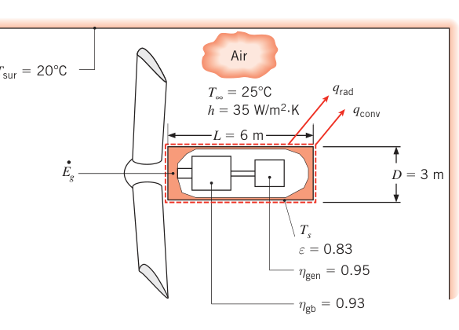
假设（Assumptions）：1. 稳态条件；2. 大环境辐射；3. 机舱靠桨毂一侧的表面绝热。
分析（Analysis）：机舱外表面温度 \(T_s\) 对应舱内的最低可能温度——舱内热量必须先传到表面、再散给空气与环境，所以舱内温度只会更高。
按总能量守恒算：第一定律写成速率形式 \(dE_{\mathrm{tot}}^{\mathrm{st}}/dt = \dot E_{\mathrm{in}}^{\mathrm{tot}} - \dot E_{\mathrm{out}}^{\mathrm{tot}}\)，稳态下 \(\dot E_{\mathrm{in}}^{\mathrm{tot}} = \dot E_{\mathrm{out}}^{\mathrm{tot}}\)。进入项是输入机舱的机械功 \(\dot W\)，离开项包括电功率输出 \(P\) 和机舱散热 \(q\)：
按热能与机械能守恒算：从式 (1.12c) 出发，稳态下 \(\dot E_{\mathrm{in}} - \dot E_{\mathrm{out}} + \dot E_g = 0\)。进入项仍是 \(\dot W\)；离开项只有 \(q\)——电功率不算在 \(E\) 里，因为 \(E\) 只指热能与机械能；发电把机械能转换成电能，是机械能的负源，所以电功率出现在生成项 \(\dot E_g = -P\)：
两种写法必然等价。于是散热速率为
机械功与电功率之间隔着两级效率：
代入得
代入速率方程：散热靠机舱外表面的对流（式 1.3a）与辐射（式 1.7）。换热面积 = 侧面 + 前端盖（后端盖绝热）：
即
这个方程没有闭式解，用试差法（或 IHT 之类软件）解得
点评（Comments）：
- 舱内温度非常高，例行维护根本没法进去——必须用风扇/鼓风机做热管理把温度降下来。
- 提高齿轮箱或发电机的效率，既多发有用的电，又减小热管理硬件的尺寸与成本——一举两得。
- 桨叶每次扫过机舱，\(h\) 都会波动，所以题给的换热系数是时间平均值。
【例 1.4】通电导棒的升温方程
已知（Known）：直径 \(D\)、单位长度电阻 \(R_e'\) 的长导棒初始与环境空气及大环境处于热平衡。通电电流 \(I\) 后平衡被打破。
求（Find）：描述棒温随通电时间变化的方程。
示意图（Schematic）：
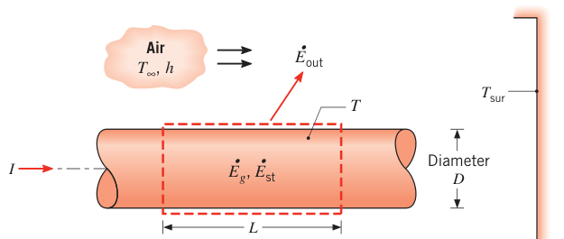
假设（Assumptions）：1. 任一时刻棒内温度均匀；2. 物性为常数（\(\rho, c, \varepsilon = \alpha\)）；3. 棒外表面与大环境之间的辐射换热属于"小表面对大封闭腔"。
分析（Analysis）：要求温度随时间的变化率，第一定律应取瞬时（速率）形式。没有机械能分量，相关项只有：表面对流与辐射散热、棒内电阻（欧姆）加热生成、以及储存热能的变化。对长为 \(L\) 的控制体应用式 (1.12c)：
生成项来自电阻加热：
加热在控制体内均匀发生，也可用体积热生成率 \(\dot q\)（W/m³）表示：\(\dot q = I^2 R_e' / (\pi D^2/4)\)，则 \(\dot E_g = \dot q V\)。流出项为表面对流（式 1.3a）与净辐射（式 1.7）：
储存项变化来自温度变化：
\(\rho\)、\(c\) 分别是棒材料的密度与比热，\(V = (\pi D^2/4)L\) 是棒的体积。代入能量平衡：
整理得
点评（Comments）：
- 该方程可数值积分求棒温随时间的变化。稳态时 \(dT/dt = 0\)，温度由代数方程确定：
- 固定环境条件（\(h, T_\infty, T_{sur}\)）、棒几何（\(D\)）与物性（\(\rho, R_e', \varepsilon\)）后，稳态温度只取决于生成速率、也就是电流。取一根裸铜线（\(D = 1\ \mathrm{mm}\)，\(\varepsilon = 0.8\)，\(R_e' = 0.4\ \Omega/\mathrm{m}\)），放在大封闭腔（\(T_{sur} = 300\ \mathrm{K}\)）里，通冷却风（\(h = 100\ \mathrm{W/(m^2 \cdot K)}\)，\(T_\infty = 300\ \mathrm{K}\)），对 \(0 \le I \le 10\ \mathrm{A}\) 算出的稳态温度随电流单调上升。
- 若安全上限规定 \(T = 60^\circ\mathrm{C}\)，电流不得超过 5.2 A。此时辐射散热（0.6 W/m）远小于对流（10.4 W/m）。想在温度不超标的前提下加大电流，就得提高风速增大 \(h\)：\(h = 250\ \mathrm{W/(m^2 \cdot K)}\) 时最大允许电流可增到 8.1 A。
拓展：这就是集总参数模型
例 1.4 假设"任一时刻棒内温度均匀"，等于默认棒内导热"快到瞬间扯平"。这个假设成立的判据是毕渥数 \(Bi \ll 1\)（第 5 章），对应的模型叫集总电容模型（lumped capacitance model）。一根 1 mm 的铜线导热好、尺寸小，这个假设相当靠谱；换成粗大的钢件就不行了。
【例 1.5】氢–空 PEM 燃料电池的冷却风速
背景：氢–空质子交换膜（PEM）燃料电池由电解质膜夹在多孔阴、阳极之间，构成很薄的三层膜电极组件（MEA）。阳极产生质子与电子（\(2\mathrm{H_2} \to 4\mathrm{H^+} + 4e^-\)），阴极处二者复合成水（\(\mathrm{O_2} + 4e^- + 4\mathrm{H^+} \to 2\mathrm{H_2O}\)），总反应 \(2\mathrm{H_2} + \mathrm{O_2} \to 2\mathrm{H_2O}\)。电解质膜的双重职责：传导氢离子、阻挡电子——逼电子走外电路做电功。
膜必须保持湿润才能传导离子；但阴极材料里若出现液态水，会堵住氧到达反应位，电池失效。所以必须控制电池温度 \(T_c\)，让阴极侧恰好是饱和水蒸气。给定氢与空气入口流量、50 mm × 50 mm 的 MEA，电池发电 \(P = I \cdot E_c = 9\ \mathrm{W}\)。饱和蒸汽条件对应 \(T_c = T_{sat} = 56.4^\circ\mathrm{C}\)。电化学反应放热，生成热速率 \(\dot E_g = 11.25\ \mathrm{W}\)，必须靠对流与辐射散掉。环境与大环境温度 \(T_\infty = T_{sur} = 25^\circ\mathrm{C}\)，冷却风速与换热系数的关系为 \(h = 10.9\ \mathrm{W \cdot s^{0.8}/(m^{2.8} \cdot K)} \times V^{0.8}\)（\(V\) 单位 m/s）。电池外表面发射率 \(\varepsilon = 0.88\)。
求（Find）：维持稳态运行（\(T_c = 56.4^\circ\mathrm{C}\)）所需的冷却风速 \(V\)。
示意图（Schematic）：
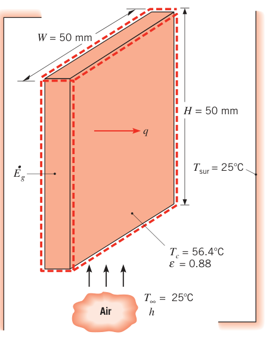
假设（Assumptions）：1. 稳态条件；2. 电池内部温度变化可忽略；3. 电池置于大环境中；4. 电池边缘绝热良好；5. 气体/液体流进出的能量可忽略。
分析（Analysis）：对电池做能量平衡。无机械能分量：\(\dot E_{\mathrm{in}} = 0\)，稳态下 \(\dot E_{\mathrm{out}} = \dot E_g = 11.25\ \mathrm{W}\)，即
其中
（两块大面散热，\(A = 2 \times 0.05 \times 0.05 = 5 \times 10^{-3}\ \mathrm{m^2}\)；温度已换算 \(T_c = 329.4\ \mathrm{K}\)、\(T_{sur} = 298\ \mathrm{K}\)。）
于是
整理出风速：
点评（Comments）：
- 膜的温度与湿度在电池内各处不同，预测局部状态需要更细的分析。
- 9.4 m/s 的风速相当高；若在电池外加换热强化件，可以降低所需风速。
- 对流散热量明显大于辐射散热量。
- 氢与氧的化学能（20.25 W）转换成电能（9 W）与热能（11.25 W），该电池的能量转换效率为 (9 W)/(20.25 W) × 100 = 44%。
【例 1.6】融冰为燃料电池供水
已知（Known）：大型 PEM 燃料电池（如车用）需要内部液态水冷却，冷天停车时冷却水必须排到旁边容器里，防止冻坏电池。考虑质量为 \(M\) 的冰：停车期间冻结而成，温度处于熔点 \(T_f = 0^\circ\mathrm{C}\)，装在边长 \(W\) 的立方容器内，容器壁厚 \(L\)、导热系数 \(k\)。开车后把容器外壁加热到 \(T_1 > T_f\) 融冰，向电池供水。
求（Find）：融完整块冰所需时间的表达式。
示意图（Schematic）：立方容器，冰水混合物（\(T_f\)）在内，外壁面 \(A\) 温度 \(T_1\)，壁厚 \(L\)、导热系数 \(k\)（见原书例题插图）。
假设（Assumptions）：1. 整个过程中壁内表面温度恒为 \(T_f\)；2. 物性为常数；3. 通过各面壁为稳态一维导热；4. 单面壁的导热面积近似取 \(W^2\)（\(L \ll W\)）。
分析（Analysis）：要求融化时间 \(t_m\)，第一定律应取时间间隔形式，\(\Delta t = t_m\)。对冰水混合物的控制体应用式 (1.12b)：
储存能量的增加完全来自固–液相变的潜热能变化。热量靠穿过容器壁的导热进入冰中。整个融化过程壁两侧温差保持 \((T_1 - T_f)\)，所以导热速率恒定：
（六个面，单面面积 \(W^2\)。）进入的能量为
单位质量固体完成相变所需的能量叫熔化潜热（latent heat of fusion）\(h_{sf}\)，于是储存能增加 \(\Delta E_{\mathrm{st}} = M h_{sf}\)。代入第一定律：
点评（Comments）：
- 若冰初始过冷（低于 \(T_f\)），还得加上把冰升温到熔点的显热能项，且冰内会出现温度梯度，问题变复杂。
- 数值演练：\(W = 100\ \mathrm{mm}\)，\(L = 5\ \mathrm{mm}\)，\(k = 0.05\ \mathrm{W/(m \cdot K)}\)，\(T_1 = 30^\circ\mathrm{C}\)。冰的质量
（冰的密度 \(\rho_s = 920\ \mathrm{kg/m^3}\)，熔化潜热 \(h_{sf} = 334\ \mathrm{kJ/kg}\)。）融化时间
- 注意 \(t_m\) 表达式里 K 与 °C 互相抵消——温度差出现的地方两个单位等价，传热分析里这种抵消很常见。
表面能量平衡#
经常要在介质表面上应用能量守恒。这时把两个控制表面贴着物理边界两侧放置，围出的控制体没有质量、没有体积（图 1.9）。生成项与储存项都不再出现——即使介质内部有能量生成，也不影响这个表面上的平衡；这个平衡对稳态和瞬态都成立。守恒要求变成：
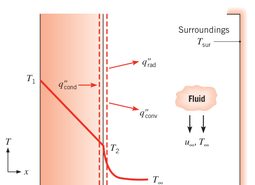
图 1.9 的控制表面上画了三项传热（按单位面积）：介质向控制表面的导热 \(q''_{\mathrm{cond}}\)、表面对流体的对流 \(q''_{\mathrm{conv}}\)、表面对环境的净辐射 \(q''_{\mathrm{rad}}\)。能量平衡为
各项分别用速率方程（式 1.2、1.3a、1.7）代入即可。
【例 1.7】人体皮肤在空气里与在水里
已知（Known）：人靠调节产热与散热维持核心体温 \(T_c = 37^\circ\mathrm{C}\) 基本恒定——这叫体温调节（thermoregulation）。计算人体与环境换热时，聚焦一层皮肤+脂肪：外表面暴露于环境，内表面温度略低于核心温度，\(T_i = 35^\circ\mathrm{C} = 308\ \mathrm{K}\)。某人的皮肤/脂肪层厚 \(L = 3\ \mathrm{mm}\)，有效导热系数 \(k = 0.3\ \mathrm{W/(m \cdot K)}\)，体表面积 \(A = 1.8\ \mathrm{m^2}\)，穿泳装，皮肤发射率 \(\varepsilon = 0.95\)。
求（Find）：1. 静止空气 \(T_\infty = 297\ \mathrm{K}\)、自然对流 \(h = 2\ \mathrm{W/(m^2 \cdot K)}\) 时，皮肤表面温度与人体散热速率；2. 在水 \(T_\infty = 297\ \mathrm{K}\)、\(h = 200\ \mathrm{W/(m^2 \cdot K)}\) 时，同样的两个量。
示意图（Schematic）：
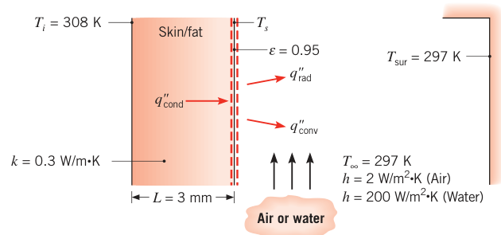
假设（Assumptions）：1. 稳态条件；2. 皮肤/脂肪层内为一维导热；3. 导热系数均匀；4. 皮肤表面与大环境的辐射换热属于"小表面对大封闭腔"，环境温度等于空气温度；5. 液态水对热辐射不透明；6. 泳装不影响散热；7. 太阳辐射忽略；8. 第 2 问中人体完全浸没。
分析（Analysis）：
- 皮肤表面温度由表面能量平衡求出。由式 (1.13)，单位面积上：
代入式 (1.2)、(1.3a)、(1.7)：
未知量只有 \(T_s\)，但辐射项是四次方，解不出显式解——只能迭代（手算或用方程求解器）。手算技巧：用式 (1.8)、(1.9) 把辐射写成 \(h_r\) 的形式：
先猜 \(T_s = 305\ \mathrm{K}\)，由式 (1.9) 估出 \(h_r = 5.9\ \mathrm{W/(m^2 \cdot K)}\)。解出 \(T_s\)（\(T_{sur} = T_\infty\)）：
用新的 \(T_s\) 重算 \(h_r\) 与 \(T_s\)，数值不再变化——迭代收敛。皮肤温度 \(307.2\ \mathrm{K} \approx 34^\circ\mathrm{C}\)。
散热速率由皮肤/脂肪层的导热算：
- 液态水对热辐射不透明，皮肤散热只有对流。用上面的表达式、令 \(h_r = 0\)：
点评（Comments）：
- 做含辐射的能量平衡时，辐射项里的温度必须用开尔文；为避免混淆，所有项都用 K 是好习惯。
- 第 1 问里对流损失 37 W、辐射损失 109 W——辐射不能省。凡是换热系数小（气体自然对流往往如此）的场合，即使题目没有任何提示，也要把辐射考虑进去。
- 人体代谢产热的典型值是 100 W。在水里泡太久，核心体温就会开始下降——水里的巨大散热来自大得多的换热系数，归根结底是水的导热系数远大于空气。
- 第 1 问皮肤温度 34°C，舒适；第 2 问 28°C，冷得难受。
守恒律应用方法论。除了熟悉 1.2 节的速率方程，还必须会用式 (1.12)、(1.13) 的能量守恒要求。按几条基本规则走，应用会顺很多：
- 定义合适的控制体，控制表面用虚线画出；
- 确定时间基准：时间间隔（式 1.12b）还是瞬时速率（式 1.12c），取决于求解目标和题目给信息的方式；
- 认出相关能量过程，每个过程在控制体上画一条标注清楚的箭头；
- 写出守恒方程，把相应的速率表达式代入相关项。
守恒要求既可以加在有限控制体上（得到整体行为的方程），也可以加在微分（无限小）控制体上（得到能解出系统内每一点状态的微分方程）。微分控制体第 2 章引入，两种控制体全书都在用。
1.3.2 与热力学第二定律及热机效率的关系#
热机（heat engine）是连续或循环运行、把热转换为功的装置：内燃机、电站、温差电器件（第 3.8 节）都是。提高热机效率极其重要：更高效的燃烧发动机做同样多的功烧更少的油，污染物与二氧化碳排放随之减少；更高效的温差电器件从废热里发更多的电。不管什么能量转换装置，尺寸、重量、成本都能靠提高转换效率压下来。
关心效率时经常搬出第二定律，它有多种等价表述。开尔文–普朗克表述（Kelvin–Planck statement）与热机运行直接相关：
任何系统都不可能在热力学循环中向外界输出净功，同时只从单一热库（thermal reservoir）接受热量。
热力学循环是始末状态相同的过程，系统储能不变，于是第一定律（式 1.12a）退化为 \(W = Q\)。开尔文–普朗克表述的一个推论：热机必须与两个（或更多）热库换热——从高温热库吸热、向低温热库排热。把全部输入热变成功是不可能的：\(W = Q_{\mathrm{in}} - Q_{\mathrm{out}}\)，\(Q_{\mathrm{in}}\)、\(Q_{\mathrm{out}}\) 都取正值——前者是高温热源给热机的热，后者是热机给低温热汇的热。
热机效率（heat engine efficiency）定义为吸热中转换为功的份额：
第二定律还告诉我们：可逆过程中 \(Q_{\mathrm{out}}/Q_{\mathrm{in}}\) 等于两热库绝对温度之比。于是可逆热机的效率——卡诺效率（Carnot efficiency）——为
\(T_c\)、\(T_h\) 分别是低温、高温热库的绝对温度。卡诺效率是任何热机在这两个温度之间运行的效率上限，真实热机必有不可逆过程，效率更低。
热力学知识说：要可逆地传热，热库与热机之间的温差必须是无穷小。但刚学完传热机制就知道：要有传热，热库与热机之间必须有非零温差（式 1.2、1.3、1.7 全都要求）。这个现实引入不可逆性、拉低效率。
于是可以建立更真实的热机模型（图 1.10）：热经热阻 \(R_{t,h}\) 进热机，经第二个热阻 \(R_{t,c}\) 出热机；下标 h、c 指热机的高温侧与低温侧。这些热阻对应热机与热库之间隔着非零温差时的导热、对流和/或辐射——比如可以是"热机与两个热库之间的墙"的导热热阻。热库温度仍是 \(T_h\)、\(T_c\)，但热机"看到"的温度是 \(T_{h,i} < T_h\) 与 \(T_{c,i} > T_c\)。热机内部仍设为可逆，效率仍是卡诺效率，但卡诺效率现在要按内部温度 \(T_{h,i}\)、\(T_{c,i}\) 计算。考虑真实（不可逆）换热的修正效率（modified efficiency）\(\eta_m\) 定义为
其中时间间隔上的热量比 \(Q_{\mathrm{out}}/Q_{\mathrm{in}}\) 已换成对应的速率比 \(q_{\mathrm{out}}/q_{\mathrm{in}}\)——这是把瞬时能量守恒（1.3.1 节）用在连续稳流过程上的结果。
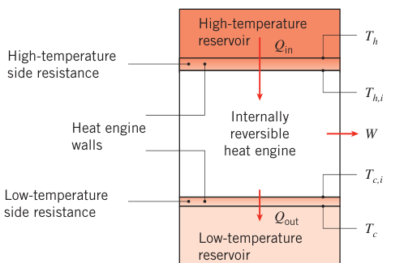
按热阻的定义，进、出热机的传热速率为
解出内部温度：
（式 1.19b 中用式 1.17 把 \(q_{\mathrm{out}}\) 写成 \(q_{\mathrm{in}}\) 与 \(\eta_m\) 的函数。）代入修正效率定义：
解出 \(\eta_m\)：
其中 \(R_{\mathrm{tot}} = R_{t,h} + R_{t,c}\)。显然：只有当 \(R_{t,h}\)、\(R_{t,c}\) 小到可忽略（或 \(q_{\mathrm{in}} = 0\)）时才有 \(\eta_m = \eta_C\)。\(R_{\mathrm{tot}}\) 非零时 \(\eta_m < \eta_C\)，且 \(R_{\mathrm{tot}}\) 或 \(q_{\mathrm{in}}\) 越大，\(\eta_m\) 越差。极端情形：\(T_h = T_c + q_{\mathrm{in}} R_{\mathrm{tot}}\) 时 \(\eta_m = 0\)——此时按式 (1.16) 算出的卡诺效率明明非零，热机却发不出任何功率。
另一个关键参数是热机的功率输出：
\(q_{\mathrm{in}} = 0\) 时效率达到上限 \(\eta_m = \eta_C\)，但功率输出也是零。要加大 \(\dot W\)，就得增大 \(q_{\mathrm{in}}\)、牺牲效率。实际应用必须在"效率最大"与"功率最大"之间找平衡：热源便宜（比如利用废热发电），可以牺牲效率换功率；燃料贵或排放有害（常规化石燃料电站），效率可能与功率同等甚至更重要。无论哪种情形，都该用传热学与热力学原理联立确定热机的真实效率与功率输出。
拓展：有限时间热力学与真实热机
式 (1.21) 这类"卡诺循环 + 两侧换热热阻"的模型属于有限时间热力学（finite-time thermodynamics）。该模型的另一著名结果是 Curzon–Ahlborn 效率 \(\eta_{CA} = 1 - \sqrt{T_c/T_h}\)：当热机工作在最大功率输出点时，效率逼近这个值。它落在卡诺效率之下、许多真实热机效率之上——真实电站 300 K/1000 K 的卡诺效率 70%，但实际远达不到。本书参考文献里的 Curzon & Ahlborn (1975) 与 Novikov (1958) 就是这一模型的源头文献。
【例 1.8】蒸汽电站的效率与结垢损失
已知（Known）：某大型蒸汽电站烧煤供热 \(q_{\mathrm{in}} = 2500\ \mathrm{MW}\)，火焰温度 \(T_h = 1000\ \mathrm{K}\)；废热排入 \(T_c = 300\ \mathrm{K}\) 的河流。热从燃烧产物经辐射+对流传到锅炉管外壁、经导热穿管壁、再由对流到管内工质（水）；冷侧是蒸汽在冷凝管外凝结、导热穿管壁、再对流给河水。热、冷两侧热阻合计了导热、对流与辐射的效应，设计工况下 \(R_{t,h} = 8 \times 10^{-8}\ \mathrm{K/W}\)、\(R_{t,c} = 2 \times 10^{-8}\ \mathrm{K/W}\)。
求（Find）：1. 洁净工况下电站的效率与功率输出；2. 煤渣在锅炉管燃烧侧逐渐结垢（\(R_{t,h} \to 9 \times 10^{-8}\ \mathrm{K/W}\)）、水生物在冷凝管河水侧积聚（\(R_{t,c} \to 2.2 \times 10^{-8}\ \mathrm{K/W}\)）后，效率与功率输出。
示意图（Schematic）：
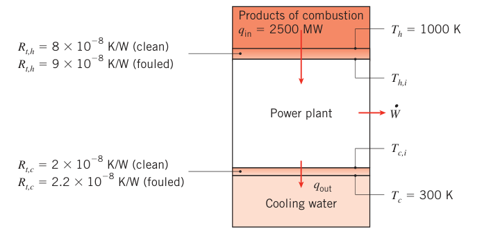
假设（Assumptions）：1. 稳态条件；2. 电站按内部可逆热机处理，效率为修正效率。
分析（Analysis）：
- 洁净工况。总热阻
由式 (1.21)：
由式 (1.22)：
- 结垢工况。重复上述计算（\(R_{\mathrm{tot}} = 9 \times 10^{-8} + 2.2 \times 10^{-8} = 1.12 \times 10^{-7}\ \mathrm{K/W}\)）：
点评（Comments）：
- 真实电站的效率与功率输出远低于上述值——机组内部还有其他不可逆因素；但即使把它们全部考虑进去，结垢照样拉低效率与输出。
- 卡诺效率 \(\eta_C = 1 - 300/1000 = 70\%\)，对应 \(\dot W = q_{\mathrm{in}} \eta_C = 1750\ \mathrm{MW}\)。忽略两侧换热不可逆性，电站功率会被明显高估。
- 结垢使功率输出减少 \(\Delta P = 40\ \mathrm{MW}\)。若电价按 $0.08/kW·h 计，结垢电站每天少赚 \(C = 40\,000\ \mathrm{kW} \times \$0.08/\mathrm{kW \cdot h} \times 24\ \mathrm{h/day} = \$76\,800/\mathrm{day}\)——一天七万多美元，这就是传热学值钱的地方。
1.4 单位与量纲#
传热的物理量用量纲（dimension）描述、用单位（unit）度量。传热需要四个基本量纲：长度（L）、质量（M）、时间（t）、温度（T），其余物理量都能由这四个推出。
英制单位（美国习惯）的基本单位：长度 foot（ft）、质量 pound mass（lbm）、时间 second（s）、温度 degree Fahrenheit（°F）。
1960 年第十一届国际计量大会定义了国际单位制（SI，Système International d'Unités）作为世界标准。美国机械工程师学会（ASME）自 1974 年起要求所有出版物使用 SI。本书计算一律用 SI——它比英制好用。但工程师免不了碰到英制结果，换算本领要有（换算因子见书内封底）。
表 1.2 SI 基本单位与辅助单位
| 量与符号 | 单位与符号 |
|---|---|
| 长度（L） | 米（m） |
| 质量（M） | 千克（kg） |
| 物质的量 | 摩尔（mol） |
| 时间（t） | 秒（s） |
| 电流（I） | 安培（A） |
| 热力学温度（T） | 开尔文（K） |
| 平面角（辅助单位） | 弧度（rad） |
| 立体角（辅助单位） | 球面度（sr） |
关于摩尔：1 mol 是含有"与 12 g 碳-12 中原子数相同"的原子/分子数的物量（克分子）。SI 推荐摩尔作为物质的量的单位，但用千摩尔（kmol）与全书更一致：1 kmol 对应 12 kg 碳-12 中的原子数。同一问题内用 mol 或 kmol 保持一致即可。物质的分子量（molecular weight）是每摩尔（或千摩尔）对应的质量。
原书笔误：氧的分子量
原书写"以氧为例，分子量 \(\mathcal{M}\) 为 16 g/mol 或 16 kg/kmol"。16 是氧原子 O 的摩尔质量；通常的氧气分子 \(\mathrm{O_2}\) 的分子量是 32 kg/kmol。查物性时别被这一句带偏。
SI 温度单位是开尔文，但摄氏温标仍广泛使用。摄氏零度对应热力学温标的 273.15 K：
两套温标的温度差完全等价，可记作 °C 也可记作 K。SI 时间单位是秒，但分、时、天太常用，与 SI 并用一般可接受。
SI 是相容的公制：所有其余单位都能由基本单位经"不带数值因子"的公式导出。表 1.3 列出部分导出单位：力用牛顿，1 N 使 1 kg 获得加速度 1 m/s²，即 \(1\ \mathrm{N} = 1\ \mathrm{kg \cdot m/s^2}\)；压强单位 N/m² 常称帕斯卡；能量只有一种单位焦耳，\(1\ \mathrm{J} = 1\ \mathrm{N \cdot m}\)（热、机械、电能通吃）；能量速率（功率）单位是 J/s，\(1\ \mathrm{J/s} = 1\ \mathrm{W}\)。
表 1.3 部分量的 SI 导出单位
| 量与符号 | 单位名称 | 表达式 | 用 SI 基本单位表示 |
|---|---|---|---|
| 力 | 牛顿（N） | — | m·kg/s² |
| 压强与应力 | 帕斯卡（Pa） | N/m² | kg/(m·s²) |
| 能量 | 焦耳（J） | N·m | m²·kg/s² |
| 功率 | 瓦特（W） | J/s | m²·kg/s³ |
要处理的数经常极大或极小，标准词头（prefix）简化书写（表 1.4）：1 MW = 10⁶ W，1 μm = 10⁻⁶ m。
表 1.4 乘数词头
| 词头 | 缩写 | 乘数 | 词头 | 缩写 | 乘数 |
|---|---|---|---|---|---|
| femto | f | 10⁻¹⁵ | hecto | h | 10² |
| pico | p | 10⁻¹² | kilo | k | 10³ |
| nano | n | 10⁻⁹ | mega | M | 10⁶ |
| micro | μ | 10⁻⁶ | giga | G | 10⁹ |
| milli | m | 10⁻³ | tera | T | 10¹² |
| centi | c | 10⁻² | peta | P | 10¹⁵ |
| — | — | — | exa | E | 10¹⁸ |
1.5 传热问题的分析方法：解题方法论#
本书的一大目标是让你会解含传热过程的工程问题——每章末尾的习题就是干这个用的。解题时建议用一套有固定格式的系统流程；本书例题一贯采用，也要求学生照着做。步骤如下：
- 已知（Known）：细读题目后，简明扼要地写下已知条件。不要复读题干。
- 求（Find）：简明写出要求什么。
- 示意图（Schematic）：画出物理系统的示意图。若要应用守恒律，在图上用虚线画出控制表面；用标注清楚的箭头标出相关传热过程。
- 假设（Assumptions）：列出所有关键简化假设。
- 物性（Properties）：汇齐后续计算需要的物性数值，注明来源。
- 分析（Analysis）：从应用合适的守恒律开始，按需引入速率方程。在代入数值之前把分析推到底，再完成计算。
- 点评（Comments）：讨论结果——总结关键结论、审视原假设是否合理、通过 what-if 与参数敏感性计算推断趋势。
第 1–4 步的重要性别低估：它们是动笔计算前的思考路线图。第 7 步鼓励你多做计算（可借助软件）获得额外洞见。
【例 1.9】红外灯固化涂层的温度控制
已知（Known）：板上的涂层用红外灯固化，灯提供均匀投入辐射 2000 W/m²。涂层吸收投入辐射的 80%，发射率 0.5。涂层同时暴露在温度 20°C 的气流与温度 30°C 的大环境中。
求（Find）：1. \(h = 15\ \mathrm{W/(m^2 \cdot K)}\) 时的固化温度；2. 气流系统可调风速、从而可调换热系数，工艺工程师需要知道温度随 \(h\) 的变化：计算并画出 \(2 \le h \le 200\ \mathrm{W/(m^2 \cdot K)}\) 范围内的表面温度曲线，并给出固化温度为 50°C 时所需的 \(h\)。
示意图（Schematic）：
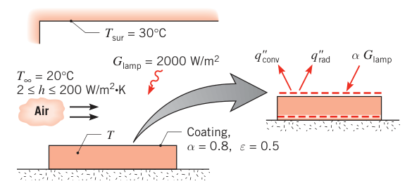
假设（Assumptions）：1. 稳态条件；2. 板背面无热损失；3. 板是小物体处于大环境中，涂层对大环境辐射的吸收比 \(\alpha_{sur} = \varepsilon = 0.5\)。
分析（Analysis）：
- 过程是稳态、背面无传热，所以板是等温的（\(T_s = T\)）。把控制表面围住整块板，用式 (1.12c)（无生成，\(\dot E_g = 0\)）：
能量收入 = 涂层吸收的灯光投入辐射 \((\alpha G)_{\mathrm{lamp}}\)；支出 = 对流 + 对大环境的净辐射：
代入式 (1.3a) 与 (1.7)：
代数值（\(T_\infty = 293\ \mathrm{K}\)，\(T_{sur} = 303\ \mathrm{K}\)）：
试差求解得
- 在规定范围内取一系列 \(h\) 解同一方程并画图：曲线显示 \(h\) 从 2 增到 200 W/(m²·K) 时，\(T\) 从约 204°C 单调降到约 28°C。要固化温度 50°C，气流需提供的换热系数为
点评（Comments）：
- 降固化温度的手段：降低 \(T_\infty\) 与 \(T_{sur}\)、加大风速提高 \(h\)。
- 对流与辐射的相对贡献随 \(h\) 剧烈变化：\(h = 2\ \mathrm{W/(m^2 \cdot K)}\) 时 \(T = 204^\circ\mathrm{C}\)，辐射主导（\(q_{\mathrm{rad}}'' \approx 1232\ \mathrm{W/m^2}\)，\(q_{\mathrm{conv}}'' \approx 368\ \mathrm{W/m^2}\)）；\(h = 200\ \mathrm{W/(m^2 \cdot K)}\) 时 \(T = 28^\circ\mathrm{C}\)，对流主导（\(q_{\mathrm{conv}}'' \approx 1606\ \mathrm{W/m^2}\)，\(q_{\mathrm{rad}}'' \approx -6\ \mathrm{W/m^2}\)）——此时板温略低于环境温度，净辐射其实是进板的。
1.6 传热的相关性#
学会传热有什么用？几个例子就能看出它的应用面有多宽。
能源挑战。人类需要足够的能源：驱动工业生产、为世界上大部分人提供安全饮水与食物、提供控制疾病的卫生条件。看美国的能流图（图 1.11a）：美国每年消耗近 110 EJ 能量，其中约 58% 以废热形式浪费掉；发电用能的近 70% 以热的形式损失；几乎完全依赖石油燃料的交通部门只利用了所耗能量的 21.5%，其余 78.5% 以热释放。工业与住宅/商业用能相对高效，但节能机会遍地都是。用热力学+传热学的"热工程"（thermal engineering）手段可以：(1) 提高能量生产与转换的效率；(2) 减少能量损失；(3) 回收更多废热。
化石燃料（石油、天然气、煤）主导许多国家的能源结构。燃烧化石燃料产生海量二氧化碳：美国每年燃烧排放的 CO₂ 目前为 5.99 Eg（\(5.99 \times 10^{15}\ \mathrm{kg}\)）。CO₂ 越排越多，大气中的辐射换热机制被改变，全球温度可能变化。在美国，发电与交通贡献了近 75% 的能源类 CO₂ 排放（图 1.11b）。
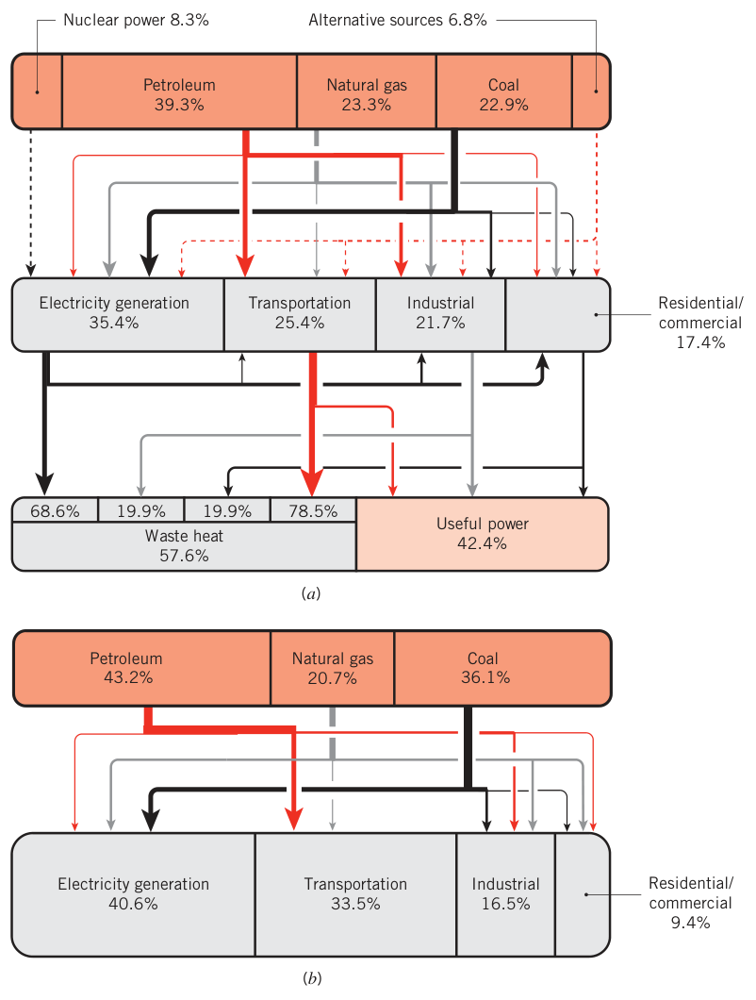
工程师正怎么用传热学应对能源与环境问题？
- 燃气轮机：提高运行温度能显著提升燃气轮机效率。如今燃烧气体的温度远超制造叶片/叶轮的特种合金的熔点。安全运行靠三板斧（图 1.12）：第一，从叶片前缘小孔喷入较冷的气体，形成贴附叶片的气膜，把叶片与热燃气隔开；第二，叶片/叶轮表面喷涂极低导热系数的陶瓷热障涂层（thermal barrier coating），加一层隔热——用 10000 K 以上的等离子喷枪把熔融陶瓷粉末喷上去；第三，叶片内部设计精细的冷却通道，全由传热工程师操刀。
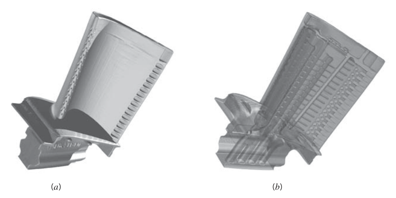
-
可再生能源与氢燃料电池：风、太阳能发电的间歇性限制了大范围应用，急需把低谷期多余能量存起来的办法。燃料电池可以：白天把富余电+水解出氢，晚上把氢与氧复合发电、放出淡水。氢燃料电池普及的障碍是尺寸、重量与寿命——效率和燃气轮机一样随温度升高而提高，但高温与大温度梯度会让电池内娇贵的聚合物材料失效。更麻烦的是电池内一定有水：水一冻，聚合物材料报废、电池停摆；又因为必须用超纯水，防冻液这类常规手段不能用。哪些传热机制必须控制？内强制对流、蒸发、凝结的知识怎么用来控温、延长寿命？这一串问题等你学了后面的章节来答。
-
电子器件散热：过去二十年的信息技术革命离不开传热工程——从纳米级集成电路，到光盘这样的微米级存储介质，再到装满发热设备的大型数据中心，温控都是靠传热技术实现的。器件越来越快、功能越来越多，发热越来越多；同时体积越来越小。热流密度（W/m²）与体积能量生成率（W/m³）一路上涨，而器件工作温度必须压在低水平上保证可靠性。个人计算机的散热方案：高导热材料（通常是铝）做的散热肋片/热沉（heat sink）贴在微处理器上，小风扇强制对流吹过肋片（图 1.13）。全球仅仅"给 PC 风扇供电 + 制造热沉"两项耗能估计每年超过 10⁹ kW·h。能不能靠导热、对流、辐射的知识干掉风扇、把热沉做小？微处理器技术的下一步本来就卡在冷却能力上，政策制定者都点名要增强电子冷却传热。
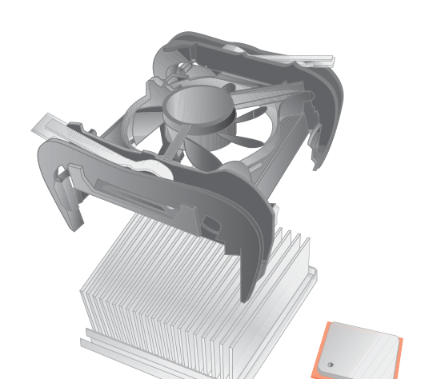
- 生物与医学传热。传热不仅属于工程系统，也属于自然界。温度调控并触发生命系统的一切生物响应，直接划出健康与疾病的边界：低体温症（hypothermia）源于人体过度散热，中暑（heat stroke）由湿热环境触发——两者都致命，都与核心体温越限有关，都直接关联人体表面的对流、辐射与蒸发过程、体内热输运以及体内体积性的代谢产热。生物医学工程的进展（如激光手术）也靠传热原理：接触高温物体造成烧伤，但热疗（hyperthermal treatment）可以有目的地摧毁癌变病灶；极低温造成冻伤，但冷冻手术（cryosurgery）的局部冷冻能选择性破坏病变组织。许多医疗设备与治疗流程的设计，都取决于预测与控制热疗过程中温度分布、化疗过程中化学组分分布的能力。哺乳动物组织的形态让处理变复杂（图 1.14）：治疗区域内静脉与毛细血管中的血流通过平流过程影响传热；成对分布的动、静脉血温不同、平流速率先不同，二者隔着固体组织形成逆流换热（counterflow heat exchange）结构；更细的毛细血管网通过血液灌流影响局部温度。后续章节的例题与习题会分析这些热系统。
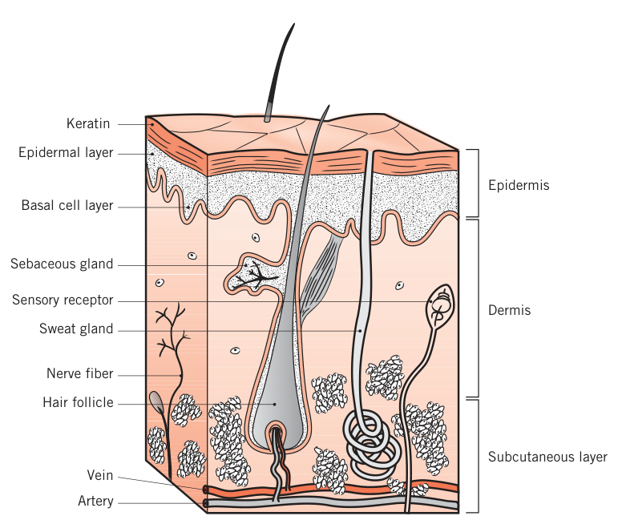
1.7 小结#
学完本章，你应该对传热学有了整体图景：认识了几种传热模式及其物理起源。接下来你会花大量时间掌握计算传热的工具，但动手之前必须先有物理直觉——给定一个物理场景，能认出其中起作用的输运过程；培养这种能力的价值怎么估都不过分，本章例题就是起点。
速率方程必须记牢、会用——它们汇总在表 1.5。守恒定律同样重要，控制体要选得仔细：速率方程 + 守恒定律 = 大量传热问题可解。
表 1.5 传热过程汇总
| 模式 | 机制 | 速率方程 | 物性/系数 |
|---|---|---|---|
| 导热 | 随机分子运动引起的能量扩散 | \(q_x''\ \mathrm{(W/m^2)} = -k\,\dfrac{dT}{dx}\)（式 1.1） | \(k\) [W/(m·K)] |
| 对流 | 随机分子运动（扩散）+ 整体运动（平流）的能量输运 | \(q''\ \mathrm{(W/m^2)} = h\,(T_s - T_\infty)\)（式 1.3a） | \(h\) [W/(m²·K)] |
| 辐射 | 电磁波（光子）输运的能量 | \(q''\ \mathrm{(W/m^2)} = \varepsilon \sigma\,(T_s^4 - T_{sur}^4)\)（式 1.7）；或 \(q\ \mathrm{(W)} = h_r A\,(T_s - T_{sur})\)（式 1.8） | \(\varepsilon\)；\(h_r\) [W/(m²·K)] |
【例 1.10】热咖啡容器：识别全部传热过程
已知（Known）：装满热咖啡的密闭容器放在空气与墙壁温度恒定的房间里。咖啡与较冷的环境之间隔着塑料杯、空气夹层和塑料盖。
求（Find）：参与咖啡冷却的全部传热过程；讨论优秀容器设计应有什么特征。
示意图（Schematic）：
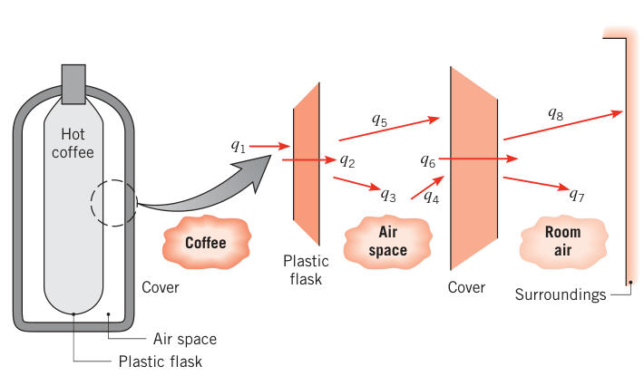
分析（Analysis）：咖啡散出能量的路径共 8 条：
- \(q_1\)：咖啡 → 杯内壁，自然对流；
- \(q_2\)：穿过杯壁，导热；
- \(q_3\)：杯外壁 → 空气夹层，自然对流；
- \(q_4\)：空气夹层 → 杯盖，自然对流；
- \(q_5\)：杯外壁 ↔ 杯盖内表面，净辐射换热；
- \(q_6\)：穿过杯盖，导热；
- \(q_7\)：杯盖外表面 → 室内空气，自然对流；
- \(q_8\)：杯盖外表面 ↔ 环境，净辐射换热。
点评（Comments）：设计改进两条——(1) 杯与盖用镀铝（低发射率）表面，压低净辐射；(2) 抽掉空气夹层（真空）或塞入填充物，抑制自然对流。保温杯的两条核心设计，全是从这张过程清单推出来的。
原书章末自测问题（1.7 节复习用）
- 导热、对流、辐射各自的物理机制是什么？
- 传热的驱动势是什么？对电荷输运而言，与之对应的类比量和"电流"是什么？（温度差 ↔ 电压，热流量 ↔ 电流，热阻 ↔ 电阻）
- 热流密度与热流量的区别是什么？单位各是什么？
- 温度梯度是什么？单位是什么？热流与温度梯度什么关系？
- 导热系数是什么？单位是什么？它在传热中扮演什么角色？
- 傅里叶定律是什么？能默写吗？
- 稳态导热时：某瞬间的温度随位置变吗？某位置的温度随时间变吗？（前者变、后者不变）
- 自然对流与强制对流的区别是什么？
- 形成流动边界层需要什么条件？热边界层呢？两者之内各是什么量在变化？
- 液/汽无相变的对流，传的是什么能量？有相变呢？（显热/内热能；潜热）
- 牛顿冷却公式是什么？能默写吗？\(h\) 在其中扮演什么角色？单位？
- 表面对外（或对内）对流换热，对被表面包围的固体有什么影响？
- 斯特藩–玻尔兹曼定律预言什么？必须配什么温度单位？能默写吗？
- 发射率是什么？它在表面辐射特性表征中起什么作用？
- 投入辐射是什么？单位是什么？
- 不透明表面对入射辐射有哪两种响应？哪种影响表面所包介质的热能、怎么影响？用什么物性表征？
- 使用辐射换热系数 \(h_r\) 需要什么条件？
- 能默写"小等温表面对大等温封闭腔"的净辐射换热公式吗？
- 高温表面暴露于较冷环境时，四种接触方式（贴另一固体/暴露于液流/暴露于气流/置于真空腔）各按什么模式传热？
- 在时间间隔上与在瞬时上应用能量守恒，本质区别是什么？
- 热能储存与热能生成有什么区别？它们在表面能量平衡中扮演什么角色？（都不出现——表面无体积、无质量）
原书笔误：两处拼写
原书第 1 章多个页面的页眉把 "Heat Transfer" 印成 "Heat Tranfer"（1.5、1.6 节页眉），1.3.2 节末段把 "thermodynamic principles" 印成 "thermodyamic principles"。均为排版笔误，不影响内容。
坑与陷阱#
8 个容易踩的坑
- 辐射计算必须用开尔文：凡是 \(T^4\)（式 1.4、1.5、1.7、1.9）或单独出现 \(T\) 的地方，温度必须是绝对温度 K；只有"温差"（式 1.2、1.3 的 \(\Delta T\)）里 °C 与 K 才等价。例 1.2 点评 1、例 1.7 点评 1 反复强调。
- 傅里叶定律的负号是方向陈述：热量永远流向温度下降的方向。写出 \(q_x'' = -k\,dT/dx\) 后，梯度为负、热流为正这件事自动成立；自己规定坐标方向时别再把负号"手动"加一遍或丢一遍。
- \(h\) 不是物性：它是边界层过程的综合表现，随流动起因、几何、流速、流体物性而变，同一表面上还可以随位置和时间变化。表 1.1 只能当量级参考，不能当设计常数抄。
- 辐射是四次方关系：\(T\) 翻倍，\(E_b = \sigma T^4\) 变 16 倍。不要拿线性直觉外推辐射；线性化的 \(h_r\)（式 1.9）本身就强烈依赖温度——温度变了要重算。
- 小 \(h\) 场景里辐射常常不能省：例 1.7 中静空气下对流只带走 37 W，辐射带走 109 W——扔掉辐射项，总散热直接少 74%。凡是"气体 + 自然对流 + 温差不大不小"，先估一估 \(h_r\)。
- 热流密度与热流量是两个量：\(q''\) 单位 W/m²，\(q\) 单位 W，差一个面积因子。式 (1.1)–(1.3) 出的是热流密度，乘面积才是热流量；例 1.1 点评专门提醒这一点。
- 贮能与生成别混：贮能 \(E_{st}\) 是控制体内能量的存量变化，生成 \(E_g\) 是其他能量形式在体内的转换（体积现象）；流入流出是表面上的过程。表面能量平衡（式 1.13、1.14）里前两项根本不出现——控制体没有体积。
- 效率与功率不是一回事：\(q_{\mathrm{in}} \to 0\) 时 \(\eta_m \to \eta_C\) 但 \(\dot W \to 0\)（式 1.22）。比较热机方案时先问"比的是效率还是功率"，例 1.8 结垢损失 40 MW × $0.08/kW·h = $76 800/天，损失全在功率上。
速览#
- 传热的定义：热量是因空间温度差而迁移的热能；有温度差就必然有传热。热力学管"量"，传热学管"率"。
- 三种模式与速率方程：导热 \(q_x'' = -k\,dT/dx\)（傅里叶定律，式 1.1）；对流 \(q'' = h(T_s - T_\infty)\)（牛顿冷却公式，式 1.3a）；辐射 \(q'' = \varepsilon\sigma(T_s^4 - T_{sur}^4)\)（灰体、大环境，式 1.7）。
- 热流密度 \(q''\)（W/m²）是单位面积的传热速率；乘垂直面积才是热流量 \(q\)（W）。
- 对流 = 壁面处分子扩散（\(y=0\) 处流速为零，只有导热）+ 边界层内整体运动输运；\(h\) 不是物性，量级见表 1.1（气体自然对流 2–25，液体相变对流 2500–100 000 W/(m²·K)）。
- 黑体发射 \(E_b = \sigma T_s^4\)（\(\sigma = 5.67 \times 10^{-8}\ \mathrm{W/(m^2 \cdot K^4)}\)）；实际表面乘发射率 \(\varepsilon\)；吸收投入辐射用 \(\alpha G\)；灰体 \(\alpha = \varepsilon\)。
- 辐射可线性化：\(q_{\mathrm{rad}} = h_r A (T_s - T_{sur})\)，\(h_r = \varepsilon\sigma(T_s + T_{sur})(T_s^2 + T_{sur}^2)\)，\(h_r\) 强依赖温度。
- 三模式统一形式 \(q = \Delta T / R_t\)：导热热阻 \(R_{t,c} = L/(kA)\)（式 1.11），电路类比是第 3 章的骨架工具。
- 第一定律（速率式）：\(\dot E_{st} = \dot E_{in} - \dot E_{out} + \dot E_g\)（式 1.12c）；表面能量平衡 \(\dot E_{in} - \dot E_{out} = 0\)（式 1.13、1.14）。稳流简化 \(q = \dot m c_p (T_{out} - T_{in})\)（式 1.12e）。
- 热机：卡诺效率 \(\eta_C = 1 - T_c/T_h\) 是上限；真实换热使热机"看到"的温差缩水，修正效率 \(\eta_m = 1 - T_c/(T_h - q_{in} R_{tot})\)（式 1.21）；功率 \(\dot W = q_{in} \eta_m\)（式 1.22），效率与功率要权衡。
- 解题七步：已知 → 求 → 示意图（虚线控制表面 + 箭头标过程）→ 假设 → 物性 → 分析（先推完式子再代数）→ 点评。温度单位：差用 K/°C 皆可，绝对温度必须 K。
术语速查#
| 英文 | 中文 | 一句话 |
|---|---|---|
| conduction | 导热 | 静止介质中靠分子/晶格活动的能量扩散传热 |
| convection | 对流 | 表面与运动流体间的换热 = 扩散 + 整体运动 |
| advection | 平流 | 单指流体整体运动携带的能量输运 |
| thermal radiation | 热辐射 | 非零温度物质以电磁波发射能量，不需介质 |
| heat flux | 热流密度 | 单位面积、单位时间的传热速率，W/m² |
| heat rate | 热流量 | 单位时间的传热量，W；= 热流密度 × 面积 |
| temperature gradient | 温度梯度 | 温度沿空间方向的变化率，K/m |
| thermal conductivity | 导热系数 | 材料输运热量的物性，W/(m·K) |
| Fourier's law | 傅里叶定律 | 导热速率方程 \(q_x'' = -k\,dT/dx\)（式 1.1） |
| convection heat transfer coefficient | 对流换热系数（表面传热系数） | 牛顿冷却公式的比例系数 \(h\)，W/(m²·K)，不是物性 |
| Newton's law of cooling | 牛顿冷却公式 | 对流速率方程 \(q'' = h(T_s - T_\infty)\)（式 1.3a） |
| hydrodynamic (velocity) boundary layer | 流动边界层（速度边界层） | 速度从壁面零值过渡到来流值的流体薄层 |
| thermal boundary layer | 热边界层 | 温度从壁面 \(T_s\) 过渡到 \(T_\infty\) 的流体薄层 |
| forced convection | 强制对流 | 流动由风扇、泵、风等外部手段驱动 |
| free (natural) convection | 自然对流 | 流动由温度差导致的密度差（浮升力）诱发 |
| mixed convection | 混合对流 | 强制与自然对流并存且都不可忽略 |
| boiling / condensation | 沸腾 / 凝结 | 伴随液–汽相变潜热交换的对流过程 |
| blackbody | 黑体 | 吸收一切入射辐射、发射功率最大的理想辐射体 |
| emissivity | 发射率 | 实际表面与黑体发射能力之比，0–1 |
| irradiation | 投入辐射 | 单位面积上入射的辐射速率 \(G\)，W/m² |
| absorptivity | 吸收比 | 被吸收的投入辐射份额 \(\alpha\)，0–1 |
| gray surface | 灰体 | 辐射物性与波长无关的理想表面，\(\alpha = \varepsilon\) |
| radiation heat transfer coefficient | 辐射换热系数 | 线化辐射的系数 \(h_r\)（式 1.9），强依赖温度 |
| thermal resistance | 热阻 | \(R_t = \Delta T / q\)，K/W，三种模式各有形式 |
| control volume / control surface | 控制体 / 控制表面 | 能量守恒的分析区域及其边界 |
| energy advection | 能量平流 | 质量穿越控制体边界时携带能量的过程 |
| flow work | 流动功 | 压力推动流体穿越边界的功，单位质量 \(pv\) |
| viscous dissipation | 黏性耗散 | 黏性力把机械能转换为热能，高流速/高黏度才显著 |
| latent heat of fusion | 熔化潜热 | 单位质量固体熔化所需能量 \(h_{sf}\)，J/kg |
| volumetric heat generation rate | 体积热生成率 | 单位体积内的生成速率 \(\dot q\)，W/m³ |
| heat engine | 热机 | 连续/循环运行、把热转换为功的装置 |
| Carnot efficiency | 卡诺效率 | 可逆热机效率上限 \(\eta_C = 1 - T_c/T_h\) |
| heat sink | 热沉（散热器/肋片） | 电子器件散热用的高导热肋片结构 |